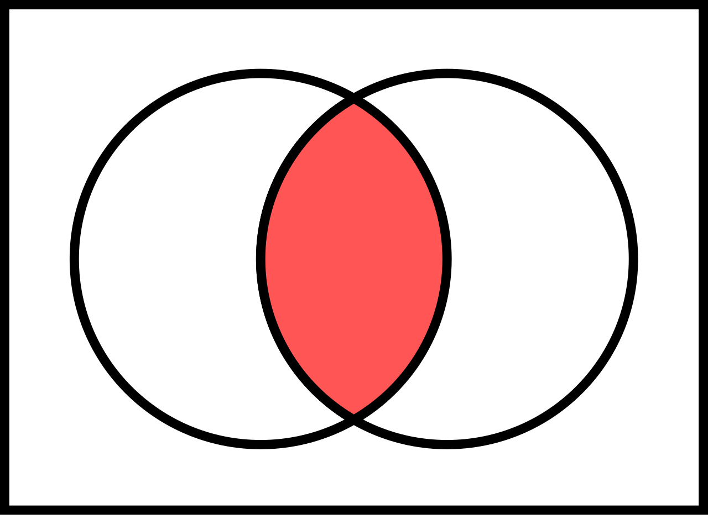
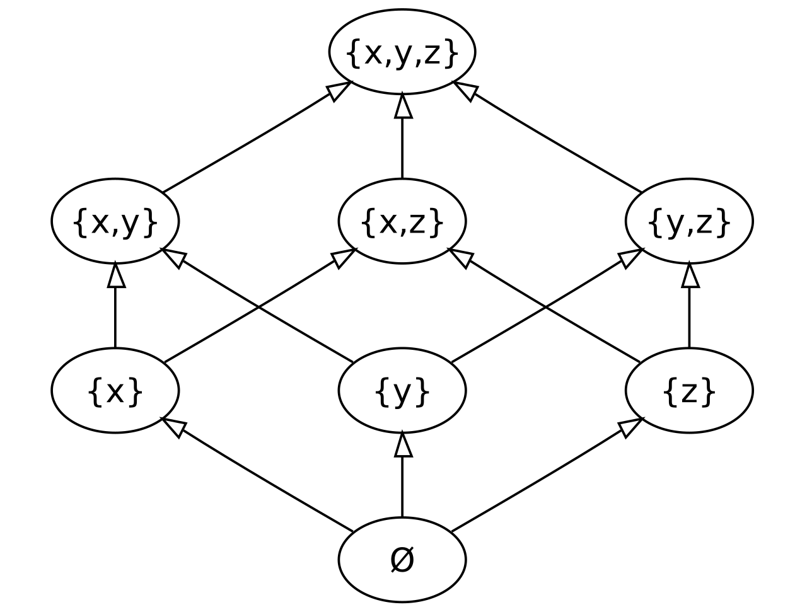
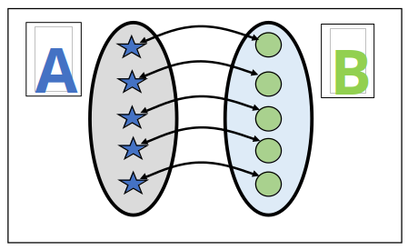
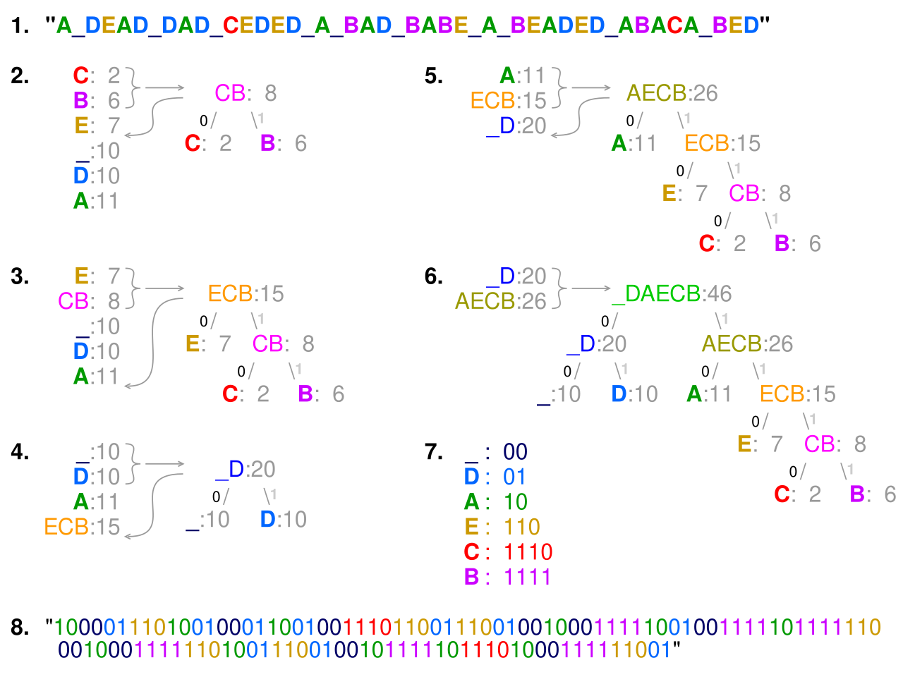
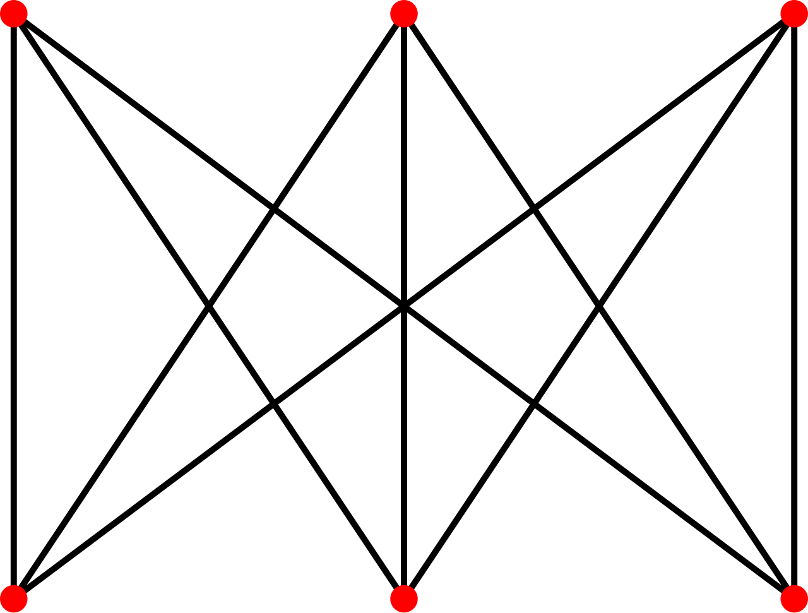
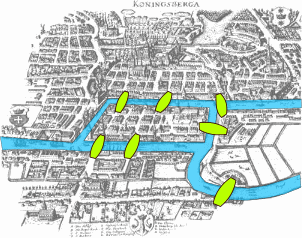

Discrete Mathematics Complete Study Guide
Simple explanations, formal SPPU exam definitions, step-by-step solved numericals, Python implementations, and 2024/2019 pattern solved questions across all 5 units.
Unit I: Sets and Propositions (09 Hours)
1.1 Propositional Logic & Propositional Equivalences
In Simple Words: Any sentence you can label "True" or "False" (like "5 is prime") is a proposition. Questions ("What time is it?") and commands ("Close the door") are not propositions.
Logical Connectives & Truth Table
| $p$ | $q$ | Negation ($\neg p$) | Conjunction ($p \land q$) | Disjunction ($p \lor q$) | Implication ($p \to q$) | Biconditional ($p \leftrightarrow q$) |
|---|---|---|---|---|---|---|
| T | T | F | T | T | T | T |
| T | F | F | F | T | F | F |
| F | T | T | F | T | T | F |
| F | F | T | F | F | T | T |
• Implication: $p \to q$ ("If $p$, then $q$")
• Converse: $q \to p$ ("If $q$, then $p$")
• Inverse: $\neg p \to \neg q$ ("If not $p$, then not $q$")
• Contrapositive: $\neg q \to \neg p$ ("If not $q$, then not $p$") — Always logically equivalent to $p \to q$!
In Simple Words: Tautology = all T's in the last column (e.g., $p \lor \neg p$). Contradiction = all F's (e.g., $p \land \neg p$). Contingency = mix of T and F.
Important Logical Equivalences & Normal Forms (PDNF / PCNF)
- Implication Law: $p \to q \equiv \neg p \lor q$
- De Morgan's Laws: $\neg(p \land q) \equiv \neg p \lor \neg q$ and $\neg(p \lor q) \equiv \neg p \land \neg q$
- Distributive Laws: $p \land (q \lor r) \equiv (p \land q) \lor (p \land r)$ and $p \lor (q \land r) \equiv (p \lor q) \land (p \lor r)$
- PDNF (Principal Disjunctive Normal Form): Sum of minterms (rows where the formula evaluates to $T$). Each minterm is a conjunction of all variables (negated if $F$, unnegated if $T$).
- PCNF (Principal Conjunctive Normal Form): Product of maxterms (rows where the formula evaluates to $F$). Each maxterm is a disjunction of all variables (negated if $T$, unnegated if $F$).
Translating English Sentences & Rules of Inference
To check whether an argument is valid, translate English premises into logic and apply standard rules of inference such as Modus Ponens ($p, p \to q \vdash q$), Modus Tollens ($\neg q, p \to q \vdash \neg p$), and Hypothetical Syllogism ($p \to q, q \to r \vdash p \to r$).
# Python: Truth Table & Tautology Checker for (p -> q) <-> (~p | q)
import itertools
print("p\tq\tp->q\t~p|q\tEquivalent?")
for p, q in itertools.product([True, False], repeat=2):
imp = (not p) or q
rhs = (not p) or q
eq = (imp == rhs)
print(f"{p}\t{q}\t{imp}\t{rhs}\t{eq}")1.2 Mathematical Induction & Strong Mathematical Induction
In Simple Words: Think of falling dominoes. Push the first domino ($P(n_0)$), and prove that any domino $k$ knocking over knocks down the next domino $k+1$. Then all dominoes fall!
In Simple Words: Useful when $P(k+1)$ depends on earlier steps beyond just $k$ (for example, proving every integer $n \ge 2$ has a prime factorization).
1.3 Set Theory, Operations & Inclusion-Exclusion
In Simple Words: Naïve set theory lets you group anything by a rule, which can cause self-contradictions like "the barber who shaves everyone who doesn't shave himself." Axiomatic set theory adds guardrails so paradoxes cannot happen.
- Power Set $\mathcal{P}(A)$: The set of all subsets of $A$. If $|A| = n$, then $|\mathcal{P}(A)| = 2^n$.
- Cartesian Product $A \times B$: $\{(a, b) \mid a \in A \text{ and } b \in B\}$, with $|A \times B| = |A| \cdot |B|$.
For 2 sets: $|A \cup B| = |A| + |B| - |A \cap B|$
For 3 sets: $|A \cup B \cup C| = |A| + |B| + |C| - |A \cap B| - |A \cap C| - |B \cap C| + |A \cap B \cap C|$

1.4 Bounded/Unbounded Sets, Countability & Cantor's Diagonalization
- Finite vs Infinite Sets: A set is finite if its cardinality is a non-negative integer; otherwise it is infinite.
- Bounded vs Unbounded Sets: A subset $S \subseteq \mathbb{R}$ is bounded if there exist $m, M \in \mathbb{R}$ such that $m \le x \le M$ for all $x \in S$ (e.g., $[0, 1]$ is bounded; $\mathbb{N}$ is unbounded).
- Countably Infinite Sets: A set $A$ is countably infinite if there exists a bijection $f: \mathbb{N} \to A$ (e.g., $\mathbb{N}, \mathbb{Z}, \mathbb{Q}$).
- Uncountably Infinite Sets: Infinite sets that cannot be put in 1-to-1 correspondence with $\mathbb{N}$ (e.g., $\mathbb{R}$, interval $(0, 1)$).
- Cantor's Diagonalization Argument: Suppose $(0, 1)$ were countable and listed as $r_1, r_2, r_3, \dots$ in decimal form. Construct a new number $d = 0.d_1d_2d_3\dots$ where $d_i = 5$ if the $i$-th digit of $r_i$ is not $5$, else $d_i = 4$. Then $d \in (0, 1)$ differs from every $r_i$ at position $i$, contradicting completeness of the list!
• Great Philosophers: Aristotle (formalized syllogistic logic), Georg Cantor (founded Set Theory and transfinite cardinalities), Richard Dedekind (Dedekind cuts and rigorous definition of infinite sets).
• Movie Recommendation Filter: Let $A(m)$ = "Action", $R(m)$ = "Rating $\ge 8$", $H(m)$ = "Horror". A user rule "Action movies rated $\ge 8$ and not Horror" is modeled as $\forall m\, \big(Recommend(m) \leftrightarrow (A(m) \land R(m) \land \neg H(m))\big)$.
1.5 Important SPPU Exam Questions & Model Answers (Unit I)
LHS $= 1^2 = 1$. RHS $= \frac{1(1+1)(2(1)+1)}{6} = \frac{6}{6} = 1$. Since LHS $=$ RHS, $P(1)$ holds.
Step 2 (Inductive Hypothesis):
Assume $P(k)$ is true for some integer $k \ge 1$: $1^2 + 2^2 + \dots + k^2 = \frac{k(k+1)(2k+1)}{6}$.
Step 3 (Inductive Step, $n = k+1$):
$$1^2 + 2^2 + \dots + k^2 + (k+1)^2 = \frac{k(k+1)(2k+1)}{6} + (k+1)^2$$ Factor out $\frac{k+1}{6}$: $$= \frac{k+1}{6} \big[k(2k+1) + 6(k+1)\big] = \frac{k+1}{6} (2k^2 + 7k + 6) = \frac{(k+1)(k+2)(2k+3)}{6}$$ This matches the formula for $n = k+1$. By mathematical induction, $P(n)$ holds for all $n \ge 1$.
(i) By Inclusion-Exclusion:
$$|J \cup C \cup P| = 45 + 30 + 20 - 6 - 1 - 5 + 1 = 84$$ Programmers proficient in none $= 100 - 84 = \mathbf{16}$.
(ii) Only Python:
$$|P \text{ only}| = |P| - |J \cap P| - |C \cap P| + |J \cap C \cap P| = 20 - 1 - 5 + 1 = \mathbf{15}.$$
Premises: (1) $M \to D$, (2) $T \to \neg D$, (3) $T$. Conclusion: $\neg M$.
1. From (2) $T \to \neg D$ and (3) $T$, by Modus Ponens, we get $\neg D$.
2. From (1) $M \to D$ and $\neg D$, by Modus Tollens, we get $\neg M$.
Hence, the argument is valid.
Unit II: Relations and Functions (09 Hours)
2.1 Relations, Properties, Matrices & Digraphs
In Simple Words: A relation is just a rule that pairs elements from one set with elements from another (or the same) set, like "$a$ divides $b$".
| Property | Formal Condition ($\forall a, b, c \in A$) | Matrix $M_R$ Check | Digraph Check |
|---|---|---|---|
| Reflexive | $(a, a) \in R$ | All main diagonal entries are $1$ | Every vertex has a self-loop |
| Irreflexive | $(a, a) \notin R$ | All main diagonal entries are $0$ | No vertex has a self-loop |
| Symmetric | $(a, b) \in R \implies (b, a) \in R$ | $M_R = M_R^T$ | Every edge has a reverse edge |
| Antisymmetric | $(a, b) \in R \land (b, a) \in R \implies a = b$ | If $m_{ij}=1$ ($i \neq j$), then $m_{ji}=0$ | No two-way edges between distinct vertices |
| Transitive | $(a, b) \in R \land (b, c) \in R \implies (a, c) \in R$ | $M_R^2 \le M_R$ (Boolean product) | If $a \to b \to c$, then $a \to c$ exists |
2.2 Equivalence Relations, Partitions, Posets, Hasse Diagrams & Lattices
In Simple Words: Equivalence behaves like "equals" ($=$): it groups elements into non-overlapping buckets (a partition) where everything in the same bucket is equivalent.
In Simple Words: A Hasse diagram is the cleanest possible "hierarchy chart" of a partial order (like divisibility or subset inclusion), drawn bottom-to-top without clutter.
- Chain: A subset of a poset in which every pair of elements is comparable (e.g., $\{1, 2, 4, 8\}$ under divisibility).
- Antichain: A subset of a poset in which no two distinct elements are comparable (e.g., $\{2, 3, 5\}$ under divisibility).
- Lattice: A poset $(L, \le)$ in which every pair of elements $\{a, b\}$ has both a Least Upper Bound (Join, $a \lor b$) and a Greatest Lower Bound (Meet, $a \land b$).

2.3 Transitive Closure & Warshall's Algorithm
The Transitive Closure $R^+$ of a relation $R$ on an $n$-element set is the smallest transitive relation containing $R$. Warshall's Algorithm computes the reachability matrix $W_n$ in $O(n^3)$ time by iteratively allowing intermediate vertices $k = 1, 2, \dots, n$:
$$W_k[i][j] = W_{k-1}[i][j] \lor \big(W_{k-1}[i][k] \land W_{k-1}[k][j]\big)$$
# Python: Warshall's Algorithm for Transitive Closure
def warshall(matrix):
n = len(matrix)
W = [row[:] for row in matrix]
for k in range(n):
for i in range(n):
for j in range(n):
W[i][j] = W[i][j] or (W[i][k] and W[k][j])
return W
# Example: A = {1,2,3,4}, R = {(1,2), (2,4), (1,3), (3,2)}
M = [
[0, 1, 1, 0],
[0, 0, 0, 1],
[0, 1, 0, 0],
[0, 0, 0, 0],
]
for row in warshall(M):
print(row)2.4 Functions, Composition, Inverse, Recursion & Growth
• Injective (One-to-One): $f(a_1) = f(a_2) \implies a_1 = a_2$.
• Surjective (Onto): $\forall b \in B,\, \exists a \in A$ such that $f(a) = b$.
• Bijective: Both injective and surjective (invertible: $f^{-1}$ exists).
In Simple Words: Injective = no two inputs share an output. Surjective = every target element is hit. Bijective = perfect 1-to-1 pairing with nothing left over.

- Composition: $(f \circ g)(x) = f(g(x))$. Note that generally $f \circ g \neq g \circ f$.
- Counting Functions: If $|A| = m$ and $|B| = n$, total functions $= n^m$; injective functions (for $m \le n$) $= \frac{n!}{(n-m)!}$; bijective functions (when $m = n$) $= n!$.
- Growth of Functions: $f(n) = O(g(n))$ (upper bound), $f(n) = \Omega(g(n))$ (lower bound), $f(n) = \Theta(g(n))$ (tight bound).
2.5 Important SPPU Exam Questions & Model Answers (Unit II)
• $k=1$: Column 1 is all $0$s $\implies W_1 = W_0$.
• $k=2$: Rows with $1$ in col 2 are $\{1, 3\}$; cols with $1$ in row 2 are $\{4\}$. Add $(1,4)$ and $(3,4)$.
• $k=3$: Row $1$ has $1$ in col 3; row 3 has $1$ in cols $\{2, 4\}$ (already in row 1) $\implies W_3 = W_2$.
• $k=4$: Row 4 is all $0$s $\implies W_4 = W_3$.
Result: $R^+ = \{(1,2), (1,3), (1,4), (2,4), (3,2), (3,4)\}$.
2. Surjective: For any $y \in \mathbb{R}$, set $x = \frac{y-3}{2} \in \mathbb{R}$. Then $f(x) = 2\left(\frac{y-3}{2}\right) + 3 = y$. Hence surjective.
Since $f$ is both injective and surjective, it is bijective, and $f^{-1}(x) = \frac{x-3}{2}$.
Unit III: Introduction to Trees (09 Hours)
3.1 Tree Terminology, Properties & Traversals
In Simple Words: A tree is a hierarchy with a single root and no closed loops. Remove any single edge and the tree breaks into two pieces.
- Level of a Node: Distance (number of edges) from the root (root is at level $0$).
- Height of a Tree: Maximum level of any leaf node in the tree.
- Full (Regular) $m$-ary Tree: Every internal vertex has either $0$ or exactly $m$ children. With $i$ internal vertices, total vertices $n = mi + 1$ and leaves $l = (m - 1)i + 1$.
- Decision Tree: A rooted tree where each internal node represents a test/decision and each leaf represents an outcome (used to prove $\Omega(n \log n)$ lower bound for comparison sorting).
- Applications in File Systems: Operating systems organize directories and files as a rooted tree (root
/, internal nodes = folders, leaves = files). - Tree Traversals: Preorder (Root-Left-Right), Inorder (Left-Root-Right — gives sorted order in a Binary Search Tree), Postorder (Left-Right-Root — used to evaluate Algebraic Expression Trees).
3.2 Prefix Codes & Huffman Coding
In Simple Words: Give short binary codes to frequent characters and longer codes to rare ones, like Morse code without needing pauses between letters.

# Python: Huffman Coding Tree & Prefix Codes
import heapq
def huffman_codes(freqs):
# Each heap item: [weight, [symbol, code]]
heap = [[w, [sym, ""]] for sym, w in freqs.items()]
heapq.heapify(heap)
while len(heap) > 1:
lo = heapq.heappop(heap)
hi = heapq.heappop(heap)
for pair in lo[1:]:
pair[1] = "0" + pair[1]
for pair in hi[1:]:
pair[1] = "1" + pair[1]
heapq.heappush(heap, [lo[0] + hi[0]] + lo[1:] + hi[1:])
return sorted(heap[0][1:], key=lambda x: len(x[1]))
sample = {"A": 8, "B": 9, "C": 10, "D": 11, "E": 13, "F": 15, "G": 22}
for sym, code in huffman_codes(sample):
print(f"{sym}: {code}")3.3 Cut Sets & Max-Flow Min-Cut Theorem
In Simple Words: A cut set is the smallest group of bridges you must blow up to split a road network into two disconnected islands.
In any transport network with source $s$ and sink $t$, the maximum value of an $s$-$t$ flow equals the minimum capacity of an $s$-$t$ cut:
$$\max |f| = \min_{(S, T)} c(S, T)$$
3.4 Minimum Spanning Tree: Prim's & Kruskal's Algorithms
| Feature | Prim's Algorithm | Kruskal's Algorithm |
|---|---|---|
| Strategy | Grows a single tree vertex-by-vertex from a start node | Sorts all edges by weight and adds cheapest non-cyclic edge |
| Intermediate State | Always connected (a single growing tree) | May be a disconnected forest until the final step |
| Data Structure | Min-Heap / Priority Queue | Disjoint Set Union (Union-Find) |
| Time Complexity | $O(E \log V)$ with binary heap | $O(E \log E)$ for sorting edges |
| Best For | Dense graphs ($E \approx V^2$) | Sparse graphs ($E \approx V$) |
# Python: Kruskal's Minimum Spanning Tree (Union-Find)
def kruskal_mst(vertices, edges):
parent = {v: v for v in vertices}
def find(x):
while parent[x] != x:
parent[x] = parent[parent[x]]
x = parent[x]
return x
mst, total = [], 0
for w, u, v in sorted(edges):
ru, rv = find(u), find(v)
if ru != rv:
parent[ru] = rv
mst.append((u, v, w))
total += w
return mst, total
verts = ["A", "B", "C", "D"]
edg = [(1, "A", "B"), (4, "A", "C"), (2, "B", "C"), (5, "B", "D"), (3, "C", "D")]
print(kruskal_mst(verts, edg))• Algebraic Expression Tree: Leaves hold operands (e.g., $a, b, c$); internal nodes hold operators ($+, -, *, /$). Postorder traversal gives Reverse Polish (Postfix) notation.
• Tic-Tac-Toe Game Tree: Root is empty $3 \times 3$ board; edges represent valid moves; leaves represent Win/Loss/Draw evaluated by Minimax.
3.5 Important SPPU Exam Questions & Model Answers (Unit III)
1. Merge $8 + 9 = 17$. Remaining: $\{10, 11, 13, 15, 17, 22\}$.
2. Merge $10 + 11 = 21$. Remaining: $\{13, 15, 17, 21, 22\}$.
3. Merge $13 + 15 = 28$. Remaining: $\{17, 21, 22, 28\}$.
4. Merge $17 + 21 = 38$. Remaining: $\{22, 28, 38\}$.
5. Merge $22 + 28 = 50$. Remaining: $\{38, 50\}$.
6. Merge $38 + 50 = 88$ (Root).
Weighted Path Length (Cost): $17 + 21 + 28 + 38 + 50 + 88 = \mathbf{242}$.
Prefix Codes: $22 \to 10$, $13 \to 110$, $15 \to 111$, $8 \to 000$, $9 \to 001$, $10 \to 010$, $11 \to 011$.
(ii) Fundamental Cut Set: A minimal edge cut of a connected graph $G$ containing exactly one branch of a chosen spanning tree $T$ and zero or more chords.
(iii) Regular (Full) $m$-ary Tree: A rooted tree in which every internal vertex has exactly $m$ children (leaves have $0$ children).
Unit IV: Introduction to Graph Theory (09 Hours)
4.1 Graph Terminology, Representations & Isomorphism
In Simple Words: Every edge has two endpoints, so adding up how many edges touch every vertex always counts each edge twice. Corollary: every graph has an even number of odd-degree vertices!
- Special Graphs: Complete graph $K_n$ ($\frac{n(n-1)}{2}$ edges); Bipartite graph (vertices split into $V_1, V_2$ with edges only between $V_1$ and $V_2$); Complete Bipartite $K_{m,n}$ ($m \cdot n$ edges); Weighted graph (edges carry numerical costs).
- Adjacency Matrix $A$ ($|V| \times |V|$): $A_{ij} = 1$ if $(v_i, v_j) \in E$, else $0$. Symmetric for undirected graphs.
- Incidence Matrix $M$ ($|V| \times |E|$): $M_{ij} = 1$ if vertex $v_i$ is incident to edge $e_j$, else $0$.
- Graph Isomorphism: $G_1 \cong G_2$ if there is a bijection $f: V_1 \to V_2$ preserving adjacency. Quick invariants to check: same $|V|$, same $|E|$, same sorted degree sequence, same cycle lengths.

4.2 Connectivity, Eulerian & Hamiltonian Graphs
| Type | Definition | Necessary & Sufficient Condition |
|---|---|---|
| Euler Circuit | Closed trail visiting every edge exactly once | Connected graph where every vertex has even degree |
| Euler Path | Open trail visiting every edge exactly once | Connected graph with exactly 2 vertices of odd degree |
| Hamilton Circuit | Closed cycle visiting every vertex exactly once | No simple degree condition; Dirac's sufficient condition: $\deg(v) \ge n/2$ for $n \ge 3$ |
| Hamilton Path | Open path visiting every vertex exactly once | Must be connected; check degree-1/degree-2 forced edges |

4.3 Single-Source Shortest Path: Dijkstra's Algorithm
Dijkstra's Algorithm finds the shortest path from a source vertex $s$ to all other vertices in a graph with non-negative edge weights. It greedily picks the unvisited vertex $u$ with minimum tentative distance $d[u]$ and relaxes all outgoing edges $(u, v)$: if $d[u] + w(u, v) < d[v]$, update $d[v] = d[u] + w(u, v)$.
# Python: Dijkstra's Algorithm using Priority Queue
import heapq
def dijkstra(graph, start):
dist = {node: float("inf") for node in graph}
dist[start] = 0
pq = [(0, start)]
while pq:
d, u = heapq.heappop(pq)
if d > dist[u]:
continue
for v, w in graph[u]:
if d + w < dist[v]:
dist[v] = d + w
heapq.heappush(pq, (dist[v], v))
return dist
g = {
"A": [("B", 2), ("C", 4)],
"B": [("C", 1), ("D", 5)],
"C": [("E", 2)],
"D": [("Z", 3)],
"E": [("Z", 3)],
"Z": []
}
print(dijkstra(g, "A"))4.4 Planar Graphs & Graph Colouring
$$V - E + R = 2$$ where $V$ = vertices, $E$ = edges, $R$ = regions (faces, including the outer infinite region).
Planarity Bounds: For simple connected planar graphs ($V \ge 3$): $E \le 3V - 6$. If triangle-free: $E \le 2V - 4$.
Kuratowski's Theorem: A graph is non-planar if and only if it contains a subgraph homeomorphic to $K_5$ or $K_{3,3}$.
- Graph Colouring & Chromatic Number $\chi(G)$: Minimum number of colours needed to colour all vertices so no two adjacent vertices share a colour. $\chi(K_n) = n$; $\chi(\text{Bipartite}) = 2$; Four-Colour Theorem: Every planar graph has $\chi(G) \le 4$.
- Case Studies (Unit IV): Social Media Directed Graph ("Follows" is asymmetric, "Friend" is symmetric); Three Utility Problem ($K_{3,3}$ is non-planar); Web Graph (pages = nodes, hyperlinks = directed edges); Google Maps (Dijkstra/A* shortest path).
4.5 Important SPPU Exam Questions & Model Answers (Unit IV)
Each edge bounds at most $2$ regions, so the sum of degrees of all regions is $\sum \deg(R_i) = 2E = 2(12) = 24$.
In a simple graph, every region is bounded by at least $3$ edges, so $\sum_{i=1}^{8} \deg(R_i) \ge 3R = 3(8) = 24$.
Since the sum is exactly $24$ and each of the $8$ regions has degree $\ge 3$, every region must be bounded by exactly $3$ edges.
A connected graph has an Eulerian circuit iff every vertex has even degree.
Therefore, $K_{m,n}$ has an Eulerian circuit if and only if both $m$ and $n$ are even (with $m, n \ge 2$).
Unit V: Counting Principles and Algebraic Structures (09 Hours)
5.1 Counting Principles, Permutations, Combinations & Binomial Theorem
• Addition Principle: Disjoint tasks of $m$ and $n$ ways $\implies m + n$ ways.
• Multiplication Principle: Sequential tasks of $m$ and $n$ ways $\implies m \times n$ ways.
• Permutations (Order matters): $P(n, r) = \frac{n!}{(n-r)!}$; with repetition: $n^r$; circular: $(n-1)!$.
• Combinations (Order does NOT matter): $C(n, r) = \binom{n}{r} = \frac{n!}{r!(n-r)!}$; with repetition: $\binom{n+r-1}{r}$.
• Binomial Theorem: $(x + y)^n = \sum_{k=0}^{n} \binom{n}{k} x^{n-k} y^k$. The $(k+1)$-th term is $T_{k+1} = \binom{n}{k} x^{n-k} y^k$.
Pascal's Triangle: Each entry $\binom{n}{k}$ is the sum of the two entries directly above it: $\binom{n}{k} = \binom{n-1}{k-1} + \binom{n-1}{k}$ (Pascal's Identity).
5.2 Pigeonhole Principle, Inclusion-Exclusion & Generating Functions
In Simple Words: If 13 people are in a room, at least 2 of them must share the same birth month (12 months = 12 boxes).
- Inclusion-Exclusion in Counting: Count elements with none of properties $P_1, P_2, P_3$ using $|U| - |A_1 \cup A_2 \cup A_3|$, and count Derangements $D_n = n! \sum_{k=0}^{n} \frac{(-1)^k}{k!}$.
- Generating Functions: Represent a sequence $\{a_n\}$ as a power series $G(x) = \sum_{n=0}^{\infty} a_n x^n$. Useful for solving counting problems with constraints (e.g., $\frac{1}{1-x} = 1 + x + x^2 + \dots$) and linear recurrence relations.
# Python: Combinations, Binomial Coefficient & Password Constraints
import math
print("C(10, 4) =", math.comb(10, 4))
print("P(10, 4) =", math.perm(10, 4))
# Password case study: 6 chars from 26 lowercase + 10 digits (36 total),
# at least 1 digit required = Total - (only letters)
total_pw = 36 ** 6
only_letters = 26 ** 6
print("Valid passwords (len 6, >=1 digit):", total_pw - only_letters)5.3 Algebraic Systems: Semigroups, Monoids, Groups & Homomorphisms
• Semigroup: Closed + Associative $(a * b) * c = a * (b * c)$.
• Monoid: Semigroup + Identity element $e$ ($a * e = e * a = a$).
• Group: Monoid + Every element $a$ has an Inverse $a^{-1}$ ($a * a^{-1} = e$).
• Abelian Group: Group + Commutative ($a * b = b * a$).
In Simple Words: Each level adds one extra rule: Closure → Associativity (Semigroup) → Identity (Monoid) → Inverses (Group) → Commutativity (Abelian Group).
- Subgroup: A non-empty subset $H \subseteq G$ that is itself a group under the same operation.
- Normal Subgroup: A subgroup $N \trianglelefteq G$ such that $g N g^{-1} = N$ for all $g \in G$ (left cosets equal right cosets: $gN = Ng$).
- Group Homomorphism: A map $f: (G, *) \to (G', \circ)$ such that $f(a * b) = f(a) \circ f(b)$.
- Congruence Relation: An equivalence relation $\equiv$ compatible with the operation: $a \equiv b$ and $c \equiv d \implies (a * c) \equiv (b * d)$ (e.g., congruence modulo $n$ on $\mathbb{Z}$).
5.4 Rings, Integral Domains & Fields
| Structure $(R, +, \cdot)$ | Addition $(R, +)$ | Multiplication $(R, \cdot)$ | Example |
|---|---|---|---|
| Ring | Abelian Group | Semigroup + Distributive over $+$ | $(\mathbb{Z}, +, \cdot)$, $M_n(\mathbb{R})$ |
| Integral Domain | Abelian Group | Commutative Monoid + No Zero Divisors ($ab=0 \implies a=0 \text{ or } b=0$) | $(\mathbb{Z}, +, \cdot)$ |
| Field | Abelian Group | $(R \setminus \{0\}, \cdot)$ is an Abelian Group | $(\mathbb{Q}, +, \cdot)$, $(\mathbb{R}, +, \cdot)$, $\mathbb{Z}_p$ ($p$ prime) |
• Handshake Puzzle: At a party of $n$ people, if everyone shakes hands with everyone else once, total handshakes $= \binom{n}{2} = \frac{n(n-1)}{2}$.
• Sudoku Solving & Generation: A $9 \times 9$ Sudoku is a constrained Latin Square solved via backtracking with row/column/box bitmask sets.
• Password Combinations: Use Multiplication Principle minus invalid cases (Inclusion-Exclusion) when constraints require at least 1 uppercase, 1 digit, or no repeated characters.
5.5 Important SPPU Exam Questions & Model Answers (Unit V)
2. Associativity: $(a * b) * c = (a + b + 1) + c + 1 = a + b + c + 2 = a + (b + c + 1) + 1 = a * (b * c)$.
3. Identity: Let $a * e = a \implies a + e + 1 = a \implies e = -1 \in \mathbb{Z}$.
4. Inverse: Let $a * a^{-1} = e = -1 \implies a + a^{-1} + 1 = -1 \implies a^{-1} = -a - 2 \in \mathbb{Z}$.
5. Commutativity: $a * b = a + b + 1 = b + a + 1 = b * a$.
Hence $(\mathbb{Z}, *)$ is an Abelian Group.
• 3 men, 2 women: $\binom{7}{3} \times \binom{6}{2} = 35 \times 15 = 525$
• 4 men, 1 woman: $\binom{7}{4} \times \binom{6}{1} = 35 \times 6 = 210$
• 5 men, 0 women: $\binom{7}{5} \times \binom{6}{0} = 21 \times 1 = 21$
Total ways: $525 + 210 + 21 = \mathbf{756}$.
$$T_8 = \binom{13}{7} x^{13-7} y^7 = \frac{13!}{7!\,6!} x^6 y^7 = \mathbf{1716\, x^6 y^7}.$$
References, Syllabus Books & Image Credits
Official SPPU 2024 Pattern Textbooks
- Kenneth H. Rosen, Discrete Mathematics and its Applications, Tata McGraw-Hill, ISBN 978-0-07-288008-3.
- Bernard Kolman, Robert C. Busby, and Sharon Ross, Discrete Mathematical Structures, Prentice-Hall of India / Pearson, ISBN 978-0-13-207845-0.
- Narsingh Deo, Graph Theory with Applications to Engineering and Computer Science, Prentice-Hall of India, 1990, ISBN 0-87692-145-4.
- Eric Gossett, Discrete Mathematical Structures with Proofs, Wiley India Ltd, ISBN 978-81-265-2758-8.
- Sriram Pemmaraju and Steven Skiena, Computational Discrete Mathematics, Cambridge University Press, ISBN 978-0-521-73311-3.
- I. N. Herstein, Topics in Algebra, 2nd ed., Indian Adaptation, Wiley India Pvt. Ltd., 2006, ISBN 978-81-265-1018-4.
Open E-Books & NPTEL / SWAYAM MOOC Links
- Open Math Books: Discrete Mathematics: An Open Introduction (dmoi-tablet.pdf)
- IIT Kanpur Notes: MTH202 Discrete Mathematics Notes
- Stanford CS103X: CS103X Discrete Structures Notes
- NPTEL Course 1: noc20_cs82 — Discrete Mathematics
- NPTEL Course 2: NPTEL 106108227
- NPTEL Course 3: NPTEL 106106094
Wikimedia Commons Image Attributions
| File | Title | Author / Artist | License | Source |
|---|---|---|---|---|
venn_diagram_sets.png | Triangle classification using Venn diagram.svg | Michel Bakni | Public domain | Wikimedia Commons |
hasse_diagram_poset.png | Hasse diagram of powerset of 3.svg | KSmrq | CC BY-SA 3.0 | Wikimedia Commons |
bijection_function.png | Bijection correspodence.png | jr.etxebarria, Ksarasola | CC BY-SA 4.0 | Wikimedia Commons |
huffman_tree.png | Huffman coding visualisation.svg | Cmglee | CC BY-SA 4.0 | Wikimedia Commons |
eulerian_graph.png | Tabuleiro representando as sete pontes de Königsberg 02.jpg | Estes Objethos Atelier / Rodrigo Tetsuo Argenton | CC BY-SA 4.0 | Wikimedia Commons |
bipartite_graph.png | Complete bipartite graph K3,3.svg | Wikimedia Commons Contributor | Public domain | Wikimedia Commons |
planar_graph_k4.png | K4 planar.svg | Original: MlaWU / Vector: Marlus Gancher | GFDL | Wikimedia Commons |